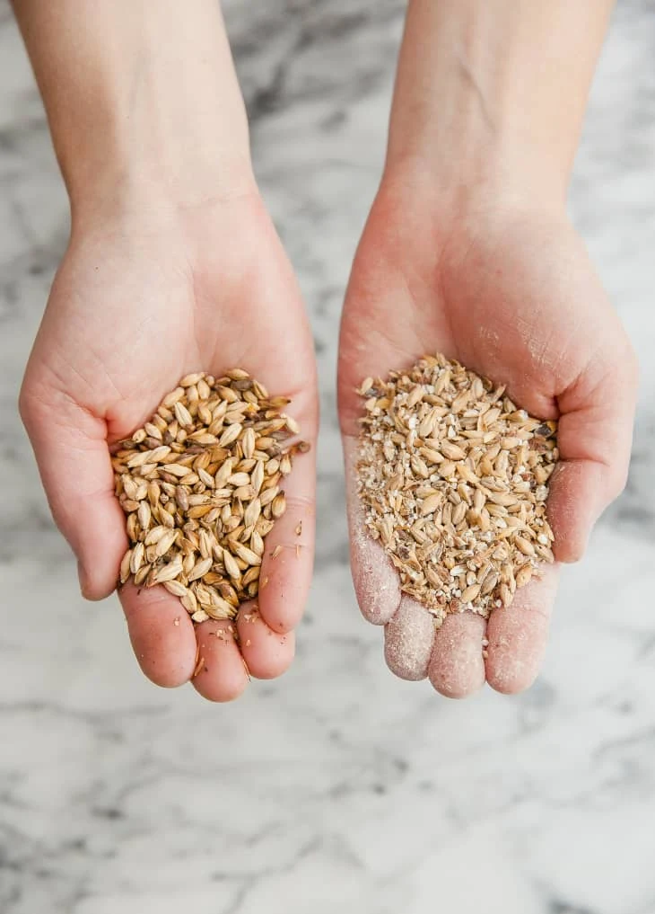
Física de la fractura, leyes de la conminución, equipos industriales y clasificación de sólidos.
Cada concepto se aplica directamente al proyecto de alcohol a partir de caña: la trituración de caña, molienda de granos y clasificación determinan el 60 % del consumo energético total del proceso.
Moler caña aumenta área de 0.1 a más de 10 m²/kg, acelerando la extracción de azúcares 100 veces. La transferencia de masa y calor depende directamente del área disponible.
Los azúcares en caña y el almidón en granos están atrapados en estructuras celulares. Romper la celda es el prerequisito para el acceso enzimático y la fermentación eficiente.
Para tamizado, fluidización, mezcla y transporte neumático se requieren rangos granulométricos precisos. El tamaño fuera de especificación causa ineficiencias aguas abajo.
La reducción de tamaño consume ~3 % de toda la electricidad mundial (la minería sola representa ~1–2 %). El arte del proceso está en moler «justo lo necesario», ni más ni menos: el exceso de molienda gasta energía y genera polvo peligroso.
Mecanismos de rotura y la teoría que explica por qué los materiales reales se fracturan con mucho menos energía de lo esperado.
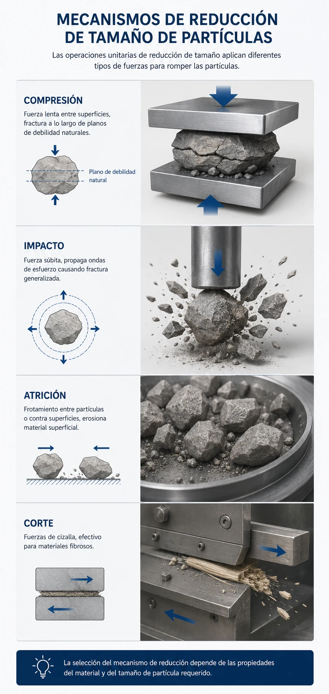
Los cuatro mecanismos primarios. La mayoría de los equipos industriales combinan dos o más simultáneamente.
La fractura ocurre cuando el esfuerzo aplicado excede la resistencia del material. El mecanismo específico determina la distribución de tamaños del producto y la energía requerida.
Clave de selección: los cristales frágiles favorecen el impacto, las fibras exigen corte, y los materiales dúctiles resisten todos los mecanismos con mayor consumo energético.
Un molino de martillos impacta y atriciona. Una trituradora de rodillos comprime y cizalla. La combinación de mecanismos es la norma, no la excepción.
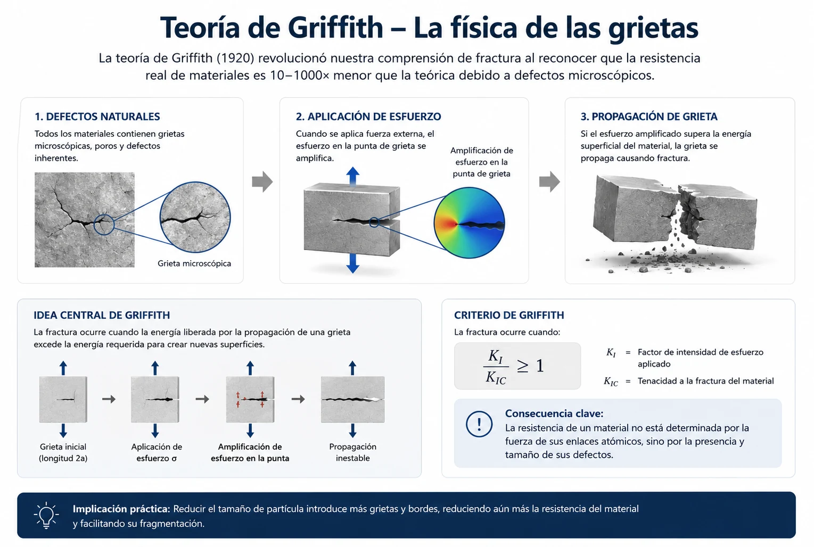
Amplificación del esfuerzo en la punta de la grieta:
Criterio de fractura de Griffith (1921) — esfuerzo mínimo para propagar una grieta de semilongitud $L$:
Una grieta más larga ($L \uparrow$) o más afilada ($r \downarrow$) dispara la concentración de esfuerzo: el material rompe muy por debajo de su resistencia teórica macroscópica.
Consecuencia de ingeniería: introducir grietas a propósito mediante impacto previo, choque térmico o pretratamiento enzimático reduce la energía de molienda posterior 20–30 %.
Partículas grandes tienen más grietas largas → se fracturan más fácilmente. Por eso la trituración primaria consume mucho menos energía por tonelada que la molienda fina.
Más grietas largas → menor energía de fractura. La trituración primaria (100 → 10 mm) es más eficiente energéticamente que la molienda fina (1 mm → 100 µm).
Vapor en fibras: abre interfases celulares. Enzimas: ablandan la estructura lignocelulósica. Choque térmico: genera grietas térmicas. Ahorro: 20–30 % de energía de molienda.
Lubrica grietas reduciendo la energía de superficie efectiva (−20 % energía). Pero por encima del óptimo sella grietas y forma pasta. Óptimo: 1–4 % minerales, 10–15 % biomasas.
Para su proyecto de caña: la humedad natural del bagazo (45–55 %) es muy superior al óptimo de molienda, lo que impone diseños especiales de molino y circuitos de pre-secado parcial.
Tres leyes empíricas para estimar la energía de molienda según el rango de tamaños. Cada una aplica a un régimen diferente.
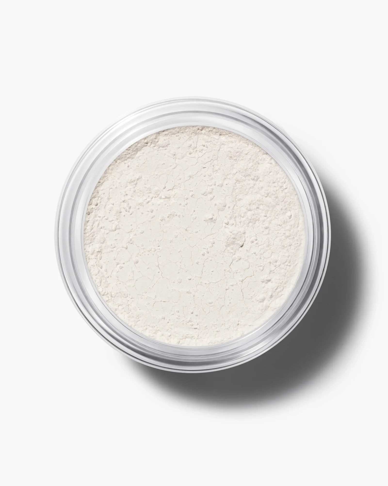
Molienda fina ($x < 100\ \mu\text{m}$): la creación de nueva superficie domina el balance energético.
La energía requerida es proporcional a la nueva superficie creada:
Área nueva generada: $\Delta A = \dfrac{6}{\rho}\!\left(\dfrac{1}{x_2}-\dfrac{1}{x_1}\right)\ \text{m}^2/\text{kg}$
Aplicabilidad: molienda fina ($x < 100\ \mu\text{m}$) donde la superficie domina. Duplicar el ratio de reducción duplica la energía requerida.
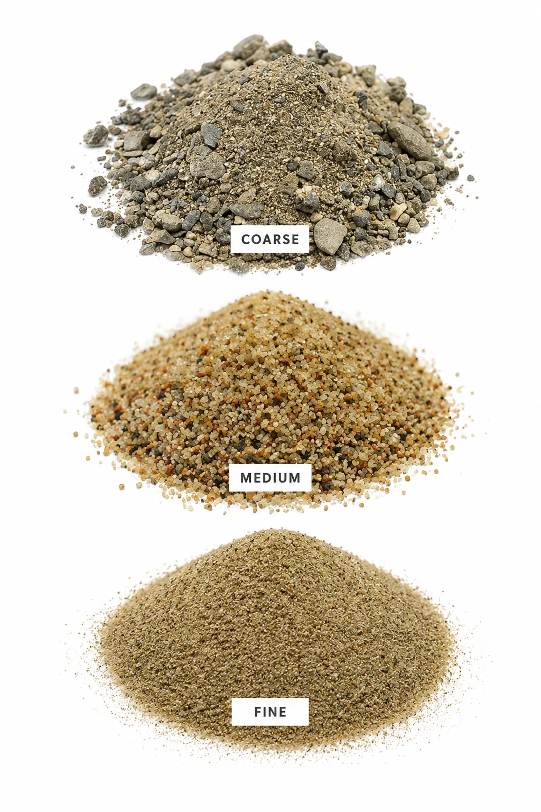
Trituración primaria gruesa ($x > 50\ \text{mm}$): la deformación elástica antes de la fractura domina el consumo.
La energía es proporcional al logaritmo del ratio de reducción:
Implica que la misma energía reduce cualquier tamaño por el mismo ratio: 100→10 mm requiere igual energía que 10→1 mm o 1→0.1 mm.
Para $R = 10$: $E = K_K$. Duplicando la energía: $R = 100$.
Aplicabilidad: trituración primaria gruesa ($x > 50\ \text{mm}$) donde la deformación elástica precede a la fractura.
Compromiso entre Rittinger y Kick: la energía varía con $x^{-3/2}$. Validada para más del 90 % de las aplicaciones industriales. Primera aproximación por defecto cuando no hay datos específicos del material.
E ≈ 2.91 kWh/ton
Este es el punto de partida para dimensionar el motor del molino.
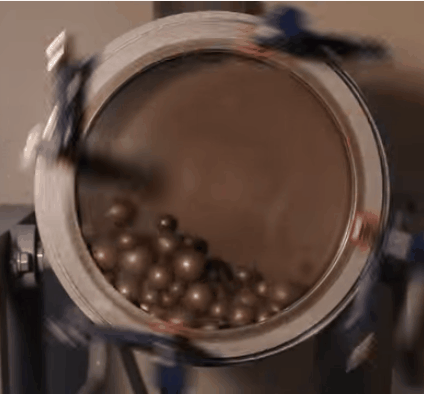
El Work Index se determina en molino de bolas estándar Bond: 12″ × 12″, 285 rpm, con carga de bolas calibrada. Procedimiento iterativo hasta estabilizar $G_{bp}$.
El $W_i$ encapsula la dureza, tenacidad y estructura del material. Se mide en molino estándar Bond:
Cuarzo 13.6 · Caliza 11.6 · Carbón 13* · Caña ~15† · Granos ~10†
* muy variable según rango (7–22) · † no es un Wi de Bond estándar: referencia estimada
El mismo material varía con origen, humedad y pre-tratamiento. Mida siempre que sea posible con el procedimiento Bond.
Lubrica grietas (−20 % energía) pero forma pasta por encima del óptimo (+50 % consumo). Minerales: 1–4 %. Biomasas como caña: 10–15 %. Fuera del rango óptimo el molino sufre taponamiento.
Materiales se fragilizan a baja temperatura: molienda criogénica con N₂ líquido reduce consumo 50 % para plásticos y caucho. Pero el ablandamiento térmico aumenta el consumo en materiales blandos.
Debilitan la estructura antes de la fractura final. La pre-molienda en etapas reduce la energía de molienda fina 20–30 %. Es la base del circuito cerrado molino–tamiz.
Concentraciones <0.1 % reducen energía 10–25 % previniendo la re-aglomeración y el sellado de grietas (efecto Rehbinder). Comunes en molienda de cemento y minerales finos.
Para su proceso: evalúe pre-tratamientos con vapor para fibras, optimice humedad de caña experimentalmente, y considere molienda en etapas con clasificación intermedia para reducir consumo total.
Trituradoras para reducción primaria gruesa, y molinos para reducción secundaria y fina. Cada equipo aplica un mecanismo específico a un rango de tamaños.
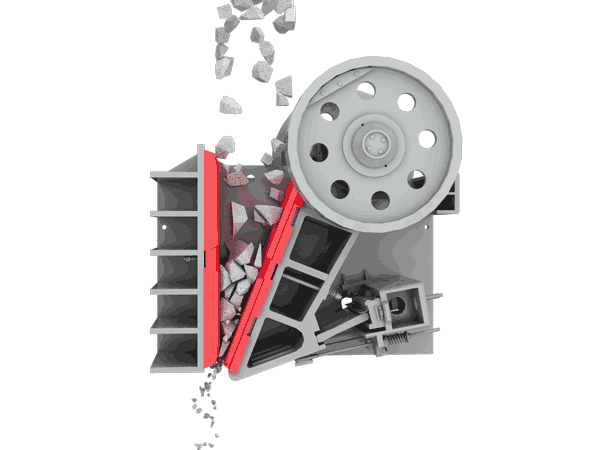
El ángulo entre mandíbulas (20–30°) es crítico: demasiado abierto y el material se expulsa; demasiado cerrado y se atasca.
Caballo de batalla para materiales duros y abrasivos. Compresión entre mandíbula fija y móvil de movimiento alternante. Ratio de reducción típico 4:1 a 6:1.
Capacidad empírica:
La mandíbula móvil pivota arriba: la apertura inferior varía más, generando un producto más uniforme. Alta capacidad. Estándar en operaciones de cantera y minería.
La apertura de entrada varía más: mayor ratio de reducción por paso, pero menor capacidad de alimentación. Susceptible a atascos con material de tamaño irregular.
Pivote a altura intermedia: balance entre uniformidad de producto (Blake) y ratio de reducción (Dodge). Adecuado cuando las especificaciones de ambos son moderadas.
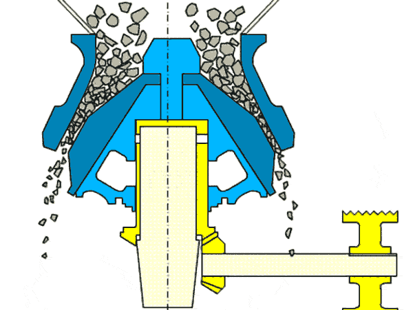
El movimiento excéntrico del cono interior comprime el material continuamente — sin el movimiento alternante de las mandíbulas.
Cono móvil excéntrico dentro de carcasa fija cónica. Compresión continua: 3–5× mayor capacidad por tonelada de equipo que las mandíbulas. Producto más isométrico.
Capacidad empírica:
3–5× mayor capacidad/peso, operación continua, menor mantenimiento por tonelada producida.
Mayor costo capital, instalación más compleja. En agroindustria, prevalecen las mandíbulas.
Boca de alimentación ≥ 1.5 m. Material directamente de la mina o cantera. Producto 75–300 mm. Costo por tonelada inferior a mandíbulas cuando la capacidad supera las 500 ton/h.
Ángulo de cono mayor y espacio de descarga más estrecho (6–65 mm). Distribución de tamaños más estrecha que las mandíbulas y mejor forma de partícula. Estándar en minería metálica y canteras de áridos.
Cámara de trituración más plana y paralela. Producto 10–40 mm con distribución muy controlada. Para materiales de dureza media antes de la etapa de molienda fina.
Giratorias cuando: capacidad > 200 ton/h, operación continua, material homogéneo y poco arcilloso. Mandíbulas cuando: alimentación variable o irregular, planta móvil/semi-fija, material húmedo o pegajoso, o presupuesto de capital limitado. En agroindustria (caña, granos) predominan las mandíbulas por mayor flexibilidad operativa y menor costo inicial.
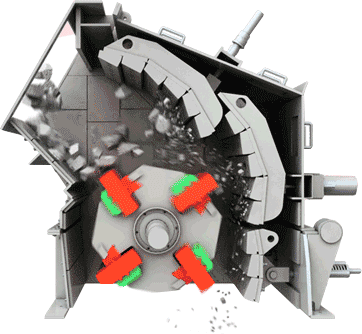
Martillos en rotor de alta velocidad (1000–5000 rpm). El tamiz perimetral (1–25 mm) define el tamaño máximo del producto.
Dominan la reducción de tamaño en agroindustria por su versatilidad con materiales húmedos, fibrosos y heterogéneos. Mecanismo combinado: impacto + atrición.
Velocidad periférica óptima:
40–120 m/s según dureza. Para caña y granos: 60–80 m/s.
Potencia empírica:
Acero de alta dureza (Cr–Mn). Impacto directo de alta energía. Resistentes al desgaste abrasivo pero más susceptibles a daño por objetos metálicos accidentales.
Se doblan al encontrar obstrucciones: auto-protección contra daños por objetos extraños. Ideales para caña de azúcar con piedras o metales. Facilitan la auto-limpieza.
El tamiz perimetral (apertura 1–25 mm) define el tamaño máximo. El área abierta debe ser 35–50 % para flujo adecuado. La velocidad del rotor controla la distribución.
Alto desgaste con materiales abrasivos (cuarzo, cenizas). Ruido extremo >100 dB: requiere cabina acústica y EPP auditivo. No apto para materiales pegajosos o de alta humedad (>25 %).
Ideal para su proyecto: maneja materiales húmedos y fibrosos. Caña de azúcar (10–15 % humedad), granos y biomasa lignocelulósica son las aplicaciones de mayor penetración en agroindustria.
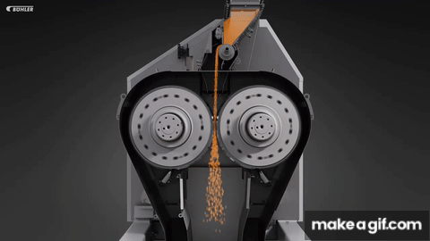
Compresión pura entre cilindros contra-rotantes. El gap entre rodillos controla el tamaño final del producto con precisión de ±0.1 mm.
Compresión pura entre cilindros contra-rotantes. Control preciso del tamaño producto y mínima generación de finos: distribución de producto estrecha y predecible.
Ángulo de pellizco crítico:
$\mu$ = coeficiente de fricción rodillo–material (~0.3 acero/sólido → $\alpha_{\max} \approx 33°$). Límite práctico ≈ 30°; limita la reducción a 4:1 por paso. Para mayores reducciones: múltiples pasos en serie.
Capacidad:
Producto lamelado y uniforme. Alta eficiencia energética para materiales no fibrosos. Ideales para cristales de azúcar y sal. Gap ajustable con micrométrico.
Las estrías aumentan la tracción sobre el material: permiten reducir tamaños más grandes en el primer paso. Más comunes en molienda de granos para producción de harinas.
Un rodillo a mayor velocidad añade cizalla al producto además de la compresión. Aumenta el rango de reducción por paso y permite texturas específicas en productos alimenticios.
Granos → harina (trigo, maíz, arroz): distribución estrecha y mínimo calor. Azúcar → glass (<100 µm): varios pasos con reducción progresiva. Preparación de malta. Ventaja clave: eficiencia energética superior a martillos para materiales no fibrosos y mínimo polvo generado.
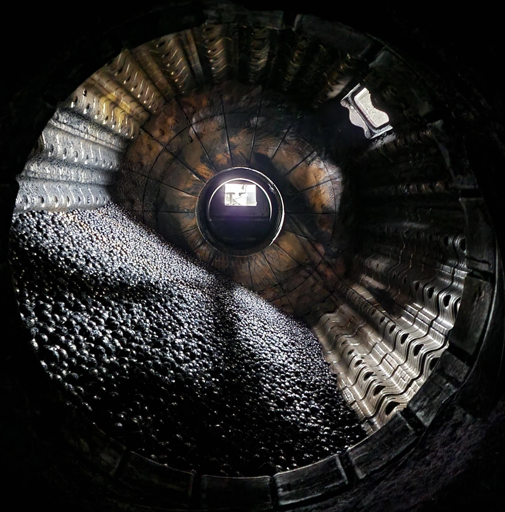
Molino de bolas industrial: el tambor rota y la carga de bolas (30–45 % del volumen) cae en cascada impactando el material.
Impacto y atrición entre bolas en tambor rotante. Domina la molienda fina ($< 100\ \mu\text{m}$) en minerales, cemento y algunos alimentos. Operación continua simple.
Velocidad crítica (centrifugación total):
Operación óptima: 65–80 % de $N_c$. Carga de bolas: 30–45 % del volumen.
Potencia estimada:
Dos zonas activas: «toe» (impacto de bolas en caída libre) y zona de carga (atrición en la masa de bolas).
Bolas en caída libre impactan: tritura partículas gruesas por fractura directa de alta energía.
Bolas deslizando entre sí y contra la pared: erosiona progresivamente las partículas finas.
Molienda muy fina posible (<10 µm). Operación continua simple. Variedad amplia de materiales y escalas.
>20 kWh/ton para <100 µm. Desgaste severo de bolas y revestimiento. Ruido extremo.
El material pasa una sola vez por el molino. Para alcanzar el tamaño especificado, hay que moler hasta que toda la fracción gruesa quede dentro de especificación — lo que implica sobre-moler las partículas finas.
La fracción gruesa del clasificador retorna al molino. Solo recircula lo que no cumple especificación, evitando la sobre-molienda del producto ya fino.
Bond estableció que el circuito abierto requiere 34 % más energía que el circuito cerrado para el mismo $P_{80}$: $E_{\text{abierto}} = 1.34 \times E_{\text{Bond}}$. Para su proyecto: la trituración primaria de caña opera en circuito abierto; la molienda fina de granos para fermentación debe diseñarse en circuito cerrado con tamiz vibratorio o hidrociclón.
El tamizado es inseparable de la molienda eficiente. El control de polvo cierra el circuito de seguridad y calidad del proceso.
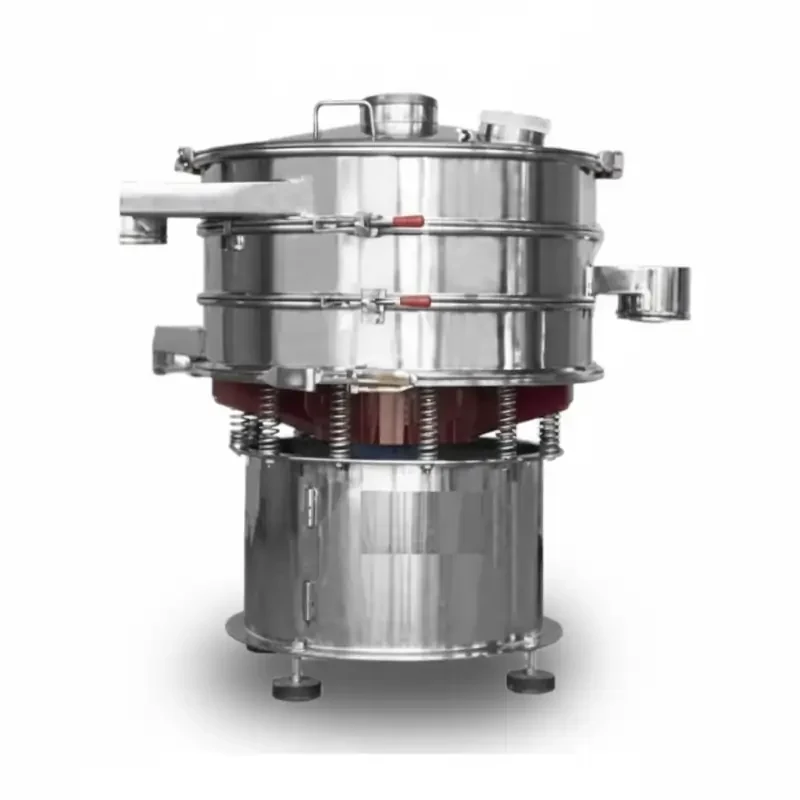
Tamizador vibratorio: movimiento circular (compacto, para finos) o lineal (mejor transporte, materiales más gruesos).
La clasificación por tamaños es inseparable de la molienda eficiente: determina la calidad del producto y la eficiencia energética del circuito.
Tamices vibratorios (100 µm – 100 mm): movimiento circular, lineal o elíptico. Para partículas con baja cohesión.
Clasificadores neumáticos para $x < 100\ \mu\text{m}$: gravedad, centrífugos o por impacto según la finura requerida.
Hidrociclones (10–500 µm): sin partes móviles, alta capacidad, corte preciso. Ideales cuando el proceso ya tiene corrientes acuosas.
Por debajo: el tamiz se convierte en cuello de botella del circuito. Por encima: malla débil con vida corta y alta probabilidad de rotura. El estándar de la industria varía entre 35 y 50 %.
Partículas cúbicas y esféricas: malla cuadrada. Fibras y partículas aciculares: malla oblonga o rectangular para evitar obstrucción y ceguera prematura del tamiz.
Para finos (<1 mm). La sobrecarga reduce drásticamente la eficiencia de separación: las partículas de tamaño límite no tienen tiempo suficiente de contacto con la malla.
Mayor humedad causa pegado de partículas a la malla (ceguera del tamiz), reduciendo el área abierta efectiva. Por encima del 5 % es necesario el tamizado húmedo o pre-secado.
El circuito cerrado molino–tamiz es más eficiente que pasos en serie: el material sub-tamiz regresa al molino evitando la sobre-molienda del producto ya fino, que consume energía sin beneficio adicional.
Caídas libres (minimizar altura de caída), descarga del molino (la de mayor velocidad de aire), tamices (encapsular el equipo) y transporte neumático (filtros en descarga).
Velocidad insuficiente: el polvo escapa al ambiente. Velocidad excesiva: arrastra producto valioso al sistema de filtración. Debe calcularse para la partícula más fina con riesgo de escape.
Mantener concentración <25 % LEL (margen de seguridad recomendado) mediante ventilación continua y monitoreo de particulado. Aplica directamente a molienda de azúcar fina ($K_{st} \approx 138$), almidón ($K_{st} \approx 148$) y bagazo en su proceso.
| Operación en su proceso | Equipo recomendado | Ley de energía | Consideración crítica |
|---|---|---|---|
| Trituración primaria caña (50 → 10 mm) | Molino de martillos — pivotantes | Bond ($W_i \approx 15$ kWh/ton) | Humedad 10–15 %, velocidad 60–80 m/s |
| Molienda granos duros (10 → 1 mm) | Rodillos corrugados en serie | Bond / Kick (partículas grandes) | Ángulo de pellizco, ratio máx. 4:1 por paso |
| Molienda fina azúcar ($< 100\ \mu\text{m}$) | Molino de bolas o martillos finos | Rittinger (superficie domina) | Control de temperatura, aditivos de molienda |
| Clasificación / circuito cerrado | Tamiz vibratorio circular + ciclón | — | Área abierta 35–50 %, humedad < 3 % |
El 50 % del consumo energético de una planta de alcohol típica se concentra en la etapa de reducción de tamaño. Una selección correcta del equipo, respaldada por el Work Index medido, puede representar diferencias de 30–40 % en el costo operativo.